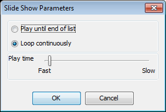

The Image tab has controls for zooming, viewing, copying, rotating or flipping, reducing noise, aligning channels, and cropping an image. Selecting any of the options in the Create group creates a new image. Any analysis of the image is not copied. You can also specify a print/export area or quickly copy the image or a region of the image to the system clipboard.
There are several zoom controls for zooming the image on the current analysis:
NOTE: Adjusting the mouse wheel over the image will also zoom in or zoom out.
Click Choose Display and six display options with varying intensities are displayed. Click the desired display.
Click Adjust Display to adjust how the current image is displayed. Select a channel to adjust and the current image is displayed in that channel, along with brighter and dimmer options. Adjust the signal, background, or midtones. Adjust the midtones to change the mapping from linear to logarithmic. This 'compression' of the intensity values may improve the appearance of less intense bands while avoiding overly bright bands.
The View Mode lets you specify the view mode to use for displaying images. Select either the editable Single Image View mode or the Multiple Image View mode to display images in the main application window. Adjust display parameters for these images using the Display Panel (see Display for details.)
Click Start and the images in the Table will appear in the window sequentially. Click Stop to return to normal viewing. Click the arrow on the Slide Show group to open the Slide Show Parameters dialog. Choose to display the images in the Table and stop at the end, or return to the beginning of the table and continue displaying the images. Adjust the slider to modify the amount of time each image is displayed.

{kind=link}